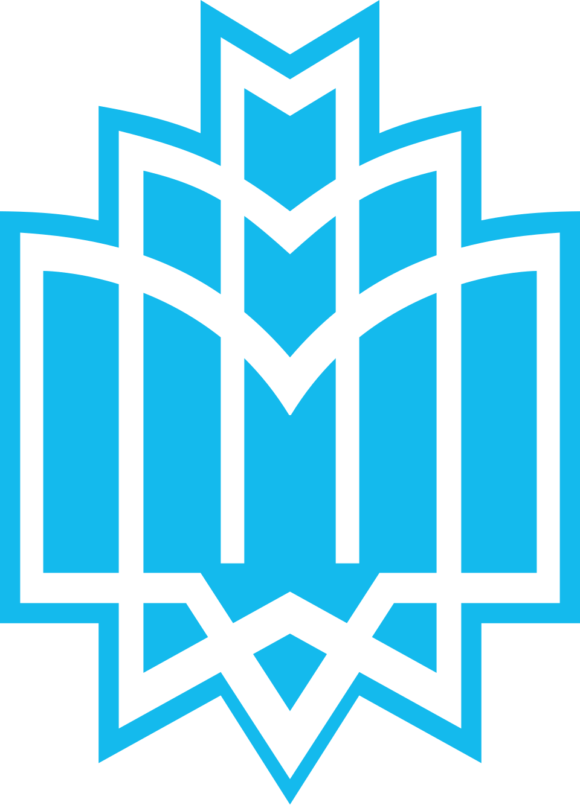
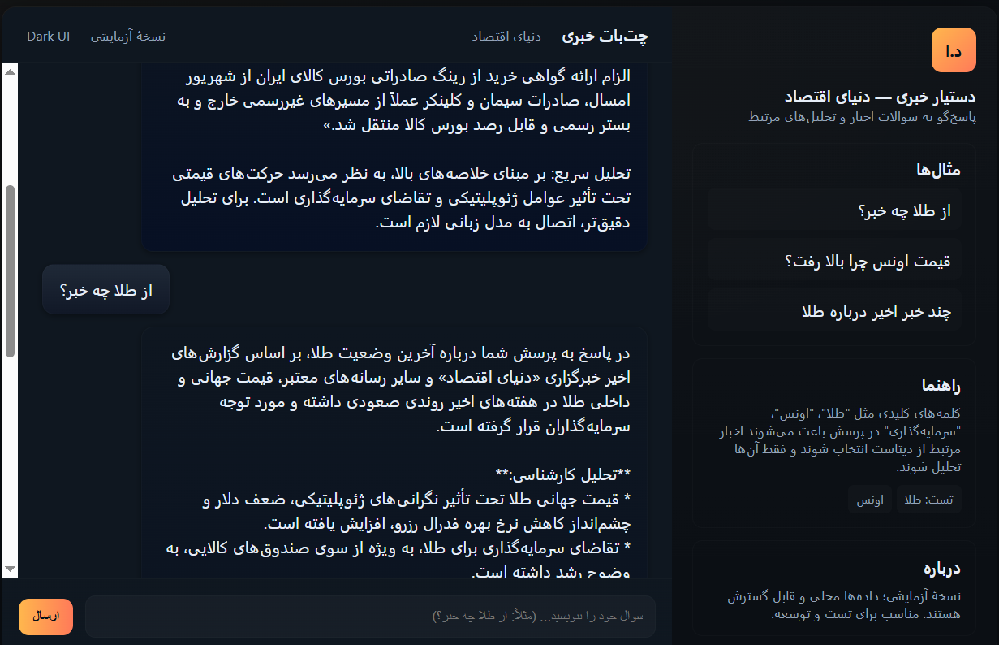
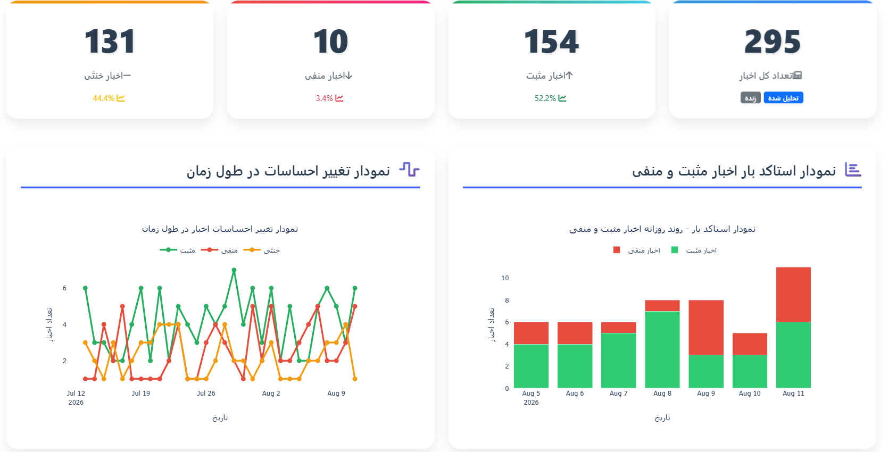
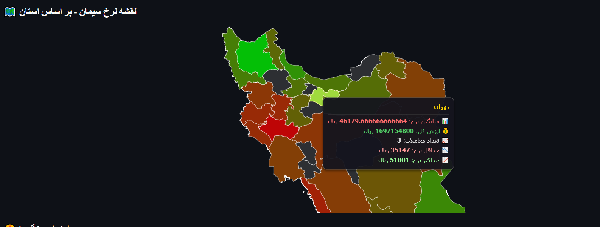
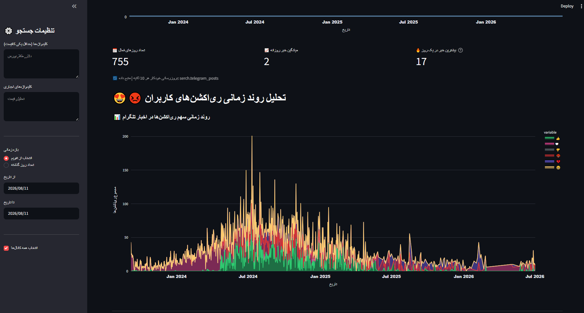

دانشجوی اقتصاد | تحلیلگر داده و سیستمهای مالی | توسعهدهنده راهکارهای دادهمحور
رسالت حرفهای خود را خلق ارزشهای اقتصادی و توسعهای میدانم و معتقدم ارائه راهکارهای مبتنی بر خلاقیت، نوآوری و تصمیمگیری دادهمحور میتواند موتور رشد و توسعه در سطح خرد و کلان باشد.
دانشجوی اقتصاد دانشگاه خوارزمی با معدل الف، از ۱۳ سالگی با بازار سرمایه آشنا شدم و همواره به دنبال ساخت سیستمهای هوشمندی بودهام که بتوانند دادهها را لحظهای رصد کرده و با ارائه بینشهای عملیاتی، دقیق و مبتنی بر پیشبینی، قدرت تحلیل و تصمیمگیری را به افراد و سازمانها هدیه دهند.
تخصص اصلی من تلفیق اقتصادسنجی، اصول سرمایهگذاری و برنامهنویسی برای خلق چنین سیستمهایی است. تمامی مهارتهای ذکرشده، صرفاً در حد گذراندن دوره آموزشی نیستند، بلکه در پروژههای واقعی پیادهسازی شده و چالشهای متعدد عملیاتی در آنها حل شده است.
همچنان مشتاق یادگیری عمیقتر در حوزه داده و هوش مصنوعی هستم و به دنبال فرصتهایی برای خلق ارزشهای اقتصادی و توسعهای از طریق راهکارهای دادهمحور میباشم.

معدل: الف | دانشجو از ۱۴۰۲
دیپلم ریاضی-فیزیک

سیستم هوشمند تحلیل و پردازش اخبار با استفاده از مدلهای زبانی و NLP

Sentiment Analysis روی اخبار مالی و اقتصادی با Python و مدلهای MiniLM

داشبورد رصد و تحلیل منطقهای قیمتهای سیمان در بورس کالا

Social Listening و رصد هوشمند کانالهای تلگرامی و شبکههای اجتماعی
رباتهای تلگرامی، چتباتهای پشتیبانی، سیستمهای پاسخگویی هوشمند
داشبوردهای مدیریتی، مالی و عملیاتی با Streamlit و Power BI
اندیکاتور، اکسپرت و استراتژیهای معاملاتی با MQL در MetaTrader 4
بررسی آزادی اقتصادی با Stata — دانشگاه خوارزمی
خرداد ۱۴۰۴ – تاکنون
شرکت تاکسین پارت
طراحی سیستمهای خودکار گزارشگیری، داشبوردهای فروش، تحلیل عملکرد مشتریان.
اسفند ۱۴۰۳ – تاکنون
سبدگردان قلک
تحلیل رفتار یونیتهولدرها، خودکارسازی گزارشهای ETF، طراحی شاخصهای پیشبینی، داشبوردهای مدیریت سبد در سبدیار، تحلیل گزارشات بانکی و ارائه صورت جریان وجوه نقد.
مهر ۱۴۰۳ – اسفند ۱۴۰۳
DataVest
مدلسازی مالی ETF، تحلیل بنیادی فولاد و سیمان، استخراج نرخ پلتس و محاسبات کرک اسپرد، داشبورد طلا و ارز، Social Listening، پیادهسازی استراتژیهای بازار آپشن.
فروردین ۱۴۰۳ – مهر ۱۴۰۳
DataVest
تحلیل دادههای مالی، طراحی سیستمهای تحلیلی، پیادهسازی مدلهای پیشبینی.
آبان ۱۴۰۲ – اسفند ۱۴۰۲
DataVest (استارتاپ FinTech)
آشنایی عملی با فرآیندهای تحلیل داده در حوزه مالی، مشارکت در پروژههای دادهکاوی.
| دوره | مؤسسه/شرکت | مدت | سال |
|---|---|---|---|
| یادگیری ماشین (Machine Learning) | DataVest | ۲ ماه | ۱۴۰۴ |
| پایتون مقدماتی | ایران دیجیتال | — | ۱۴۰۴ |
| پایتون مالی (Financial Python) | DataVest | ۳ ماه | ۱۴۰۳ |
| اکسل مالی (Financial Excel) | اکو یونی | ۴ ماه | ۱۴۰۲ |
| ICDL | مؤسسه پژوهشگران جوان | ۳ ماه | ۱۳۹۷ |
اگر به دنبال یک متخصص متعهد برای پروژههای داده، مالی یا هوش مصنوعی هستید، خوشحال میشوم صحبت کنیم.
📞 شماره تماس: ۰۹۰۳۸۰۱۹۲۱۳
💬 تلگرام: @Amirhosein_nuorif83